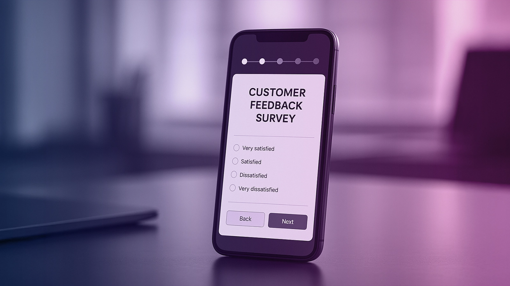

In today's competitive market, understanding the path to brand loyalty is crucial for businesses in Saudi Arabia. Milaknight, a leading digital marketing company, specializes in helping businesses achieve this goal through effective customer journey mapping.
Key Takeaways
- Understanding the customer path is crucial for businesses in Saudi Arabia.
- Effective journey mapping drives engagement and conversion.
- Milaknight's expertise in digital marketing helps businesses achieve their goals.
- Targeted strategies foster brand loyalty and drive growth.
- Businesses can benefit from Milaknight's comprehensive digital marketing services.
The Power of Understanding Your Customer's Path
Understanding the customer's journey is crucial for businesses aiming to thrive in Saudi Arabia's competitive market. By mapping the customer's path, businesses can identify key touchpoints that influence purchasing decisions and overall user experience.
Defining Customer Journey Mapping
Customer journey mapping is the process of creating a visual representation of every interaction a customer has with a brand, from the initial awareness stage to post-purchase support. It involves understanding the customer's needs, pain points, and motivations at each stage of the marketing funnel.
Read More: Why search engine optimization is crucial for your business growth
Why Businesses in Saudi Arabia Need Journey Mapping
Businesses in Saudi Arabia operate in a unique market with its own set of challenges and opportunities. Understanding these nuances is crucial for success.
Unique Market Considerations
The Saudi Arabian market is characterized by a young population and a growing e-commerce sector. Businesses must adapt their strategies to meet the evolving needs of this demographic, ensuring a seamless user experience across all touchpoints.
Competitive Advantage Through Customer Understanding
By understanding their customers' journeys, businesses can gain a competitive advantage. This involves using data to inform marketing strategies, improving customer retention, and driving long-term growth through effective marketing funnel optimization.
In conclusion, customer journey mapping is not just a tool; it's a strategic approach to understanding and meeting customer needs. For businesses in Saudi Arabia, embracing this approach can lead to enhanced customer satisfaction, improved brand loyalty, and ultimately, a stronger market presence.
The Customer Journey: From First Impression to Brand Advocate
Effective customer journey mapping enables businesses to identify key moments that influence customer decisions and loyalty. The customer journey is a complex process that involves multiple stages, each requiring strategic engagement and meaningful interactions.
Awareness Stage: Creating Meaningful First Touchpoints
The journey begins with the awareness stage, where creating a lasting first impression is crucial. Businesses in Saudi Arabia can leverage professional website design and SEO optimization to enhance their online visibility and attract potential customers.
Consideration Stage: Nurturing Interest and Trust
As customers move to the consideration stage, nurturing their interest and building trust become paramount. This can be achieved through engaging content and personalized marketing strategies that address their specific needs and preferences.
Decision Stage: Converting Prospects to Customers
At the decision stage, the focus shifts to converting prospects into customers. Streamlined conversion processes and clear calls-to-action can significantly improve conversion rates.
Retention Stage: Building Lasting Relationships
Once a customer is acquired, the retention stage focuses on building a lasting relationship. This involves ongoing engagement through various channels, including email marketing and social media, to keep customers satisfied and loyal.
Advocacy Stage: Transforming Customers into Brand Ambassadors
The final stage involves transforming satisfied customers into brand advocates. By delivering exceptional customer experiences and implementing loyalty programs, businesses can encourage customers to become loyal advocates, driving word-of-mouth marketing and further growth.
Identifying Critical Touchpoints in the Digital Landscape
As customers navigate the digital landscape, identifying key touchpoints can make or break their journey with a brand. In Saudi Arabia, where digital adoption is on the rise, understanding these touchpoints is crucial for businesses aiming to enhance customer experience and drive loyalty.
Navigation and Information Architecture
Intuitive navigation and clear information architecture are essential for guiding visitors through a website seamlessly. This ensures that customers can find what they're looking for quickly, improving overall satisfaction.
Mobile Responsiveness
With the majority of internet users accessing websites through mobile devices, mobile responsiveness is no longer a luxury but a necessity. Ensuring that a website is optimized for mobile can significantly boost user engagement.
Social Media Engagement Strategies
Social media platforms offer a unique opportunity for brands to engage with their audience, build brand awareness, and drive website traffic. Developing a comprehensive social media strategy can help businesses foster meaningful connections with their customers.
Email Marketing and Automation Sequences
Email marketing remains a powerful tool for nurturing leads and encouraging conversions. By leveraging automation sequences, businesses can personalize their interactions with customers, enhancing the overall customer experience.
Advocacy Stage: Transforming Customers into Brand Ambassadors
The final stage involves transforming satisfied customers into brand advocates. By delivering exceptional customer experiences and implementing loyalty programs, businesses can encourage customers to become loyal advocates, driving word-of-mouth marketing and further growth.
Search Engine Visibility and SEO
Ensuring that a website is visible on search engines is critical for attracting organic traffic. By optimizing their website for search engines through SEO strategies, businesses can improve their online presence and reach a wider audience.
Aligning Your Marketing Funnel with the Customer Journey
A well-aligned marketing funnel and customer journey are essential for driving business success in today's competitive landscape. To achieve this alignment, it's crucial to understand the different stages of the customer journey and tailor your marketing strategies accordingly.
Top of Funnel: Content Strategies That Drive Awareness
At the top of the funnel, the focus is on creating awareness. Content strategies that drive awareness include blog posts, social media content, and SEO-optimized articles that address the needs and interests of your target audience. By creating valuable and relevant content, you can attract potential customers and draw them into your marketing funnel.
Middle of Funnel: Engagement Tactics That Build Consideration
In the middle of the funnel, the goal is to nurture leads and build consideration. Engagement tactics such as email marketing campaigns, webinars, and interactive content can help keep your audience engaged. These tactics allow you to provide more in-depth information and establish your brand as a thought leader in the industry.
Bottom of Funnel: Conversion Optimization Techniques
At the bottom of the funnel, the focus shifts to converting leads into customers. Conversion optimization techniques include optimizing landing pages, simplifying the checkout process, and offering personalized promotions. By streamlining the conversion process, you can increase sales and improve customer satisfaction.
Beyond the Funnel: Retention and Loyalty Programs
Beyond the funnel, the focus is on retaining customers and building brand loyalty. Implementing retention and loyalty programs such as rewards schemes, exclusive offers, and exceptional customer service can help keep customers engaged and loyal to your brand. By fostering long-term relationships, you can drive repeat business and positive word-of-mouth.
Read More: Why search engine optimization is crucial for your business growth
Building Brand Loyalty Through Exceptional User Experience
Exceptional user experience is the cornerstone of building brand loyalty in Saudi Arabia's diverse consumer market. By understanding the intricacies of customer behavior and preferences, businesses can tailor their strategies to create lasting impressions.
The Psychology Behind Customer Loyalty
Customer loyalty is deeply rooted in psychology, where emotional connections and consistent experiences play a pivotal role. Trust and satisfaction are key drivers that encourage customers to return and advocate for a brand.
Creating Emotional Connections with Your Brand
To foster emotional connections, businesses must understand their customers' needs and preferences. This can be achieved through:
- Personalized marketing campaigns
- Engaging storytelling
- Responsive customer service
Consistency Across All Customer Touchpoints
Consistency is crucial in reinforcing brand identity and building trust. This includes:
Visual Brand Consistency
Maintaining a uniform visual identity across all platforms, including logos, color schemes, and typography, helps in creating a recognizable brand image.
Messaging and Tone Consistency
The tone and messaging should be consistent across all communication channels, ensuring that the brand's voice is always identifiable and relatable.
By focusing on these aspects, businesses in Saudi Arabia can significantly enhance their brand loyalty through exceptional user experience. A loyal customer base not only drives repeat business but also becomes a powerful advocate for the brand.

Data-Driven Approaches to Journey Optimization
By adopting a data-driven strategy, companies can significantly enhance their customer journey and marketing funnel. This approach allows businesses to make informed decisions, reducing the guesswork involved in optimizing the customer experience.
Essential Metrics for Measuring Journey Effectiveness
To measure the effectiveness of the customer journey, businesses must track key metrics. These include conversion rates, customer satisfaction (CSAT) scores, and net promoter scores (NPS). By monitoring these metrics, companies can identify areas that need improvement.
Using Analytics to Identify Friction Points
Analytics tools play a crucial role in identifying friction points within the customer journey. By analyzing user behavior and drop-off rates, businesses can pinpoint where customers are experiencing difficulties.
A/B Testing Strategies for Journey Improvements
A/B testing is a powerful method for optimizing the customer journey. By comparing different versions of a webpage or application, businesses can determine which elements are most effective in driving conversions.
Customer Feedback Integration Methods
Integrating customer feedback into the optimization process is vital. This can be achieved through surveys, social media listening, and review analysis. By incorporating customer feedback, businesses can make data-driven decisions that meet customer needs.
How Milaknight Transforms Customer Journeys in Saudi Arabia
Milaknight is revolutionizing the customer journey in Saudi Arabia through its comprehensive digital marketing solutions. By understanding the unique needs of the Saudi Arabian market, Milaknight helps businesses create seamless and personalized customer experiences.
Comprehensive Digital Marketing Solutions
Milaknight offers a wide range of digital marketing services designed to enhance the customer journey. These include:
- Strategic Marketing Planning: Developing tailored marketing strategies that align with business goals.
- Creative Content Development: Crafting compelling content that resonates with the target audience.
Professional Website Design and SEO Optimization
A well-designed website is crucial for delivering a positive customer experience. Milaknight's professional website design services ensure that businesses have a strong online presence, while SEO optimization techniques improve search engine visibility and drive organic traffic.
Targeted Sponsored Advertising Campaigns
Milaknight's sponsored advertising campaigns are designed to reach the target audience effectively. By leveraging data-driven insights, businesses can maximize their ROI and achieve their marketing objectives.
Integrated Business Management Services
Milaknight's integrated business management services include:
- Marketing Video Production: Creating engaging video content that captures the brand's message.
- Event Organization and Management: Planning and executing successful events that drive customer engagement.
By leveraging Milaknight's comprehensive digital marketing solutions, businesses in Saudi Arabia can transform their customer journeys and achieve long-term success.
Overcoming Common Customer Journey Challenges
In today's digital landscape, understanding and addressing customer journey challenges is vital for enhancing user experience. Businesses in Saudi Arabia face unique obstacles that can impact their customer journey, from cultural nuances to rapidly changing consumer behaviors.
Addressing Cultural Nuances
Understanding the cultural context of Saudi Arabia is crucial for creating a customer journey that resonates with the local audience. This involves being sensitive to cultural norms, using appropriate language, and incorporating local preferences into the customer experience.
Managing Multi-Channel Experiences
With the proliferation of digital channels, managing a cohesive customer experience across multiple touchpoints is a significant challenge. Businesses must ensure consistency in branding, messaging, and service quality, whether the customer is interacting online, through a mobile app, or in a physical store.
Key strategies include:
- Implementing omnichannel marketing solutions
- Utilizing data analytics to track customer interactions
- Ensuring seamless transitions between online and offline channels
Balancing Automation with Personal Touch
While automation can streamline processes and improve efficiency, it's crucial to maintain a personal touch in customer interactions. Striking the right balance between automation and human engagement is key to delivering a satisfying customer experience.
Adapting to Changing Consumer Behaviors
Consumer behaviors and preferences are constantly evolving. Businesses must stay agile, using data and insights to anticipate and respond to these changes, ensuring their customer journey remains relevant and engaging.
By addressing these challenges and focusing on enhancing the user experience, businesses in Saudi Arabia can create a compelling customer journey that drives loyalty and growth.
Case Studies: Successful Customer Journey Transformations
Saudi Arabian businesses are increasingly focusing on customer journey transformations to enhance brand loyalty and drive sales. This shift is crucial in today's competitive market, where understanding and optimizing the customer's path from awareness to loyalty can significantly impact a company's bottom line.
Saudi Retail Brand Success Story
A leading retail brand in Saudi Arabia faced challenges in maintaining customer engagement across online and offline channels.
By implementing a comprehensive customer journey mapping strategy, they were able to identify and address pain points.
Challenge Identification
The brand recognized that customers were dropping off during the checkout process on their e-commerce platform.
Solution Implementation
They streamlined the checkout process, introduced multiple payment options, and enhanced mobile responsiveness.
Measurable Results
As a result, they saw a 25% increase in conversion rates and a significant improvement in customer satisfaction.
B2B Service Provider Transformation
A B2B service provider in Saudi Arabia transformed their customer journey by implementing a robust content marketing strategy, enhancing their marketing funnel, and improving engagement at every touchpoint.
E-commerce Platform Journey Optimization
An e-commerce platform optimized its customer journey by leveraging data analytics to personalize the shopping experience, resulting in increased customer loyalty and repeat business.
These case studies demonstrate the power of customer journey transformations in driving business success in Saudi Arabia.
Implementing Your Own Customer Journey Mapping Strategy
Effective customer journey mapping enables businesses to identify pain points and opportunities, leading to improved customer satisfaction. By understanding the customer's path from awareness to loyalty, businesses in Saudi Arabia can create targeted marketing strategies that drive engagement and conversion.
Step-by-Step Process for Effective Journey Mapping
To create a comprehensive customer journey map, businesses should follow a structured process. This involves:
- Identifying customer personas and their unique needs
- Mapping the customer's journey across multiple touchpoints
- Analyzing customer feedback and behavior
- Optimizing the journey based on data-driven insights
Cross-Departmental Collaboration Requirements
Successful customer journey mapping requires collaboration across departments, including marketing, sales, and customer service. By working together, teams can ensure a seamless customer experience and align their strategies with customer needs.
Tools and Resources for Journey Analysis
Various tools and resources are available to support customer journey analysis, including customer feedback software, analytics platforms, and journey mapping templates. Businesses can leverage these tools to gain a deeper understanding of their customers' journeys.
Timeline for Implementation and Optimization
The timeline for implementing and optimizing a customer journey mapping strategy varies depending on the business's size and complexity. However, businesses should regularly review and update their journey maps to ensure they remain relevant and effective.
By following these steps and leveraging the right tools and resources, businesses in Saudi Arabia can create a customer journey mapping strategy that drives long-term success and enhances customer loyalty.
Conclusion: Partnering with Milaknight for Journey Excellence
Effective customer journey mapping is crucial for businesses in Saudi Arabia seeking to enhance brand loyalty and drive long-term success. By understanding the customer's path and optimizing each touchpoint, companies can create meaningful connections and foster lasting relationships.
Milaknight offers comprehensive digital marketing solutions tailored to the unique needs of businesses in Saudi Arabia. Their expertise in customer journey mapping enables companies to transform awareness into loyalty, driving business growth and revenue.
By partnering with Milaknight, businesses can leverage their knowledge and experience to optimize the customer journey, improve user experience, and ultimately achieve journey excellence. With a focus on brand loyalty and customer journey, Milaknight helps businesses succeed in the competitive Saudi Arabian market.
FAQ
Customer journey mapping is the process of creating a visual representation of every interaction a customer has with your brand. It can benefit your business by helping you understand your customers' needs, identify pain points, and create a more personalized experience, ultimately leading to increased brand loyalty and user experience.
To align your marketing funnel with the customer journey, you need to understand the different stages of the customer journey and tailor your marketing strategies to each stage. This includes creating content that drives awareness, engagement tactics that build consideration, and conversion optimization techniques that drive sales.
User experience plays a crucial role in building brand loyalty by creating an emotional connection with your customers. A well-designed user experience can make your brand more relatable, increase customer satisfaction, and ultimately drive loyalty.
To measure the effectiveness of your customer journey mapping strategy, you need to track essential metrics such as customer satisfaction, conversion rates, and retention rates. You can also use analytics tools to identify friction points and optimize your customer journey.
Common customer journey challenges include addressing cultural nuances, managing multi-channel customer experiences, balancing automation with personal touch, and adapting to rapidly changing consumer behaviors. To overcome these challenges, you need to be aware of your customers' needs, be flexible, and be willing to adapt your strategies.
Milaknight can help you transform your customer journey by providing comprehensive digital marketing solutions, including strategic marketing planning, creative content development, professional website design, and targeted sponsored advertising campaigns. Their expertise in driving business success can help you achieve your customer journey goals.
Consistency across all customer touchpoints is crucial in creating a seamless customer experience. It helps to build trust, reinforce your brand identity, and create an emotional connection with your customers. Consistency can be achieved by ensuring that your visual brand, messaging, and tone are consistent across all touchpoints.